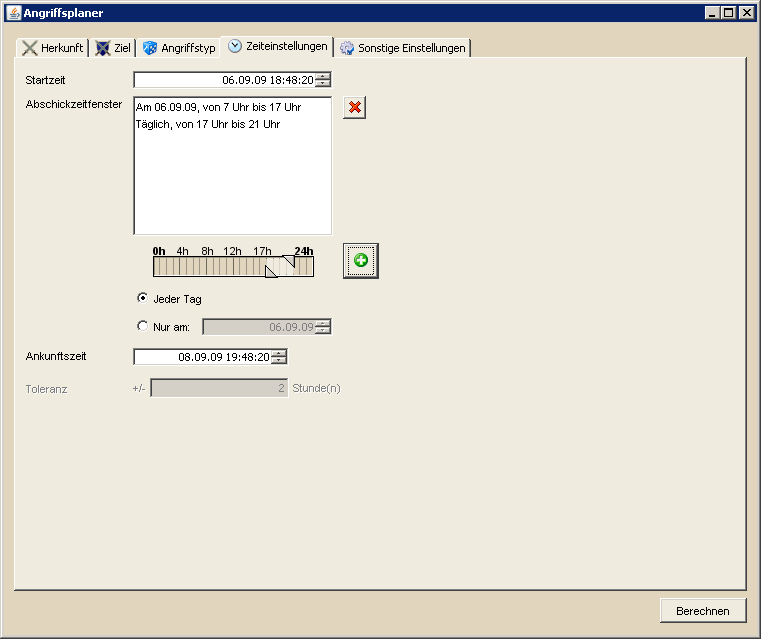

Angriffsplaner - Zeiteinstellungen |
||
|  | ||
Die Zeiteinstellungen betreffen die Rahmenbedingungen aller Angriffe. Die erste Einstellung befasst sich mit der Startzeit. Diese stellt den frühsten Zeitpunkt dar, zu dem ein Angriff losgeschickt wird. Alle geplanten Angriffe reihen sich anschließend zwischen Startzeit und Ankunftszeit ein, die im unteren Bereich festgelegt werden kann. | ||
|
|
|
|
Angriffe wären in diesem Fall so geplant, dass sie nur innerhalb der grünen Zeitfenster abgeschickt werden müssten. Gibt man mehrere Zeitfenster an entstehen selbstredend mehr Möglichkeiten, alle angegebenen Herkunftsdörfer für Angriffe zu verwenden. |